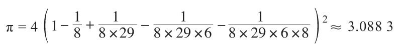
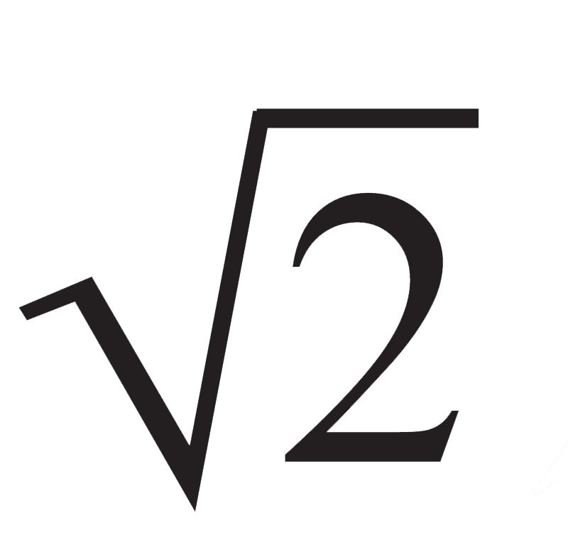
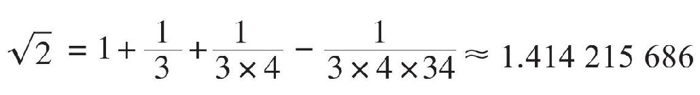
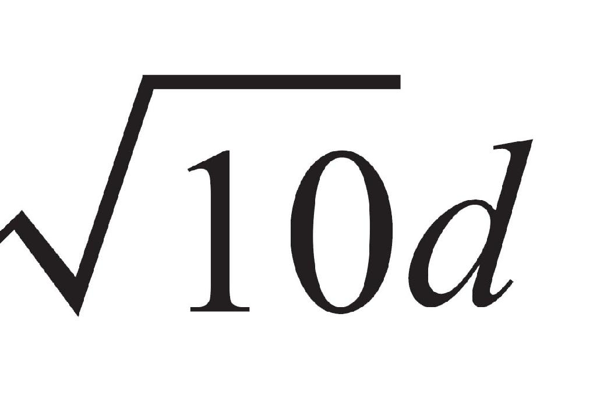
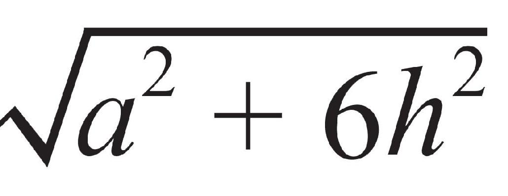
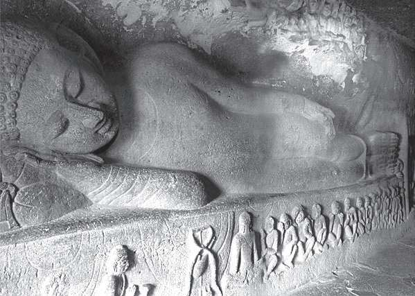
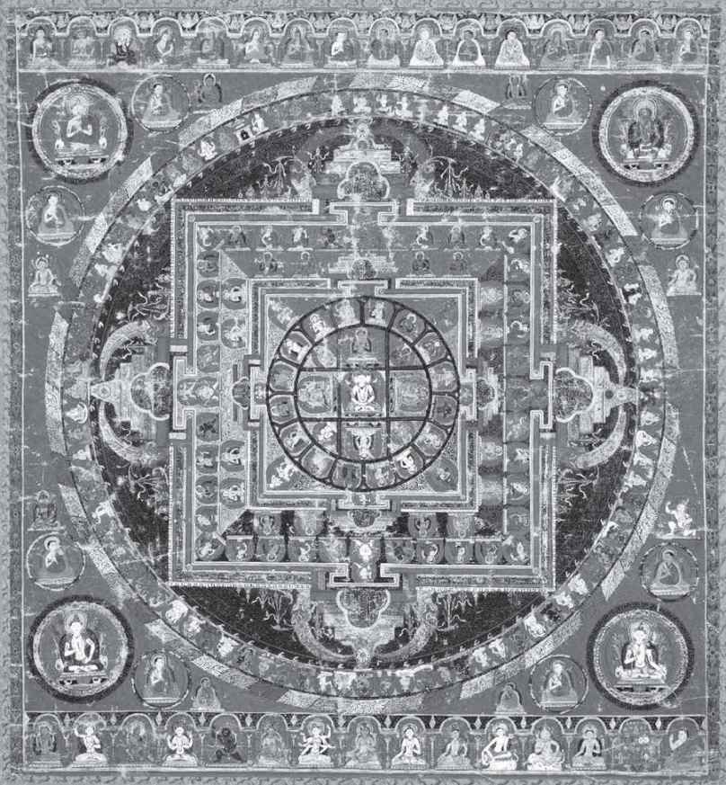
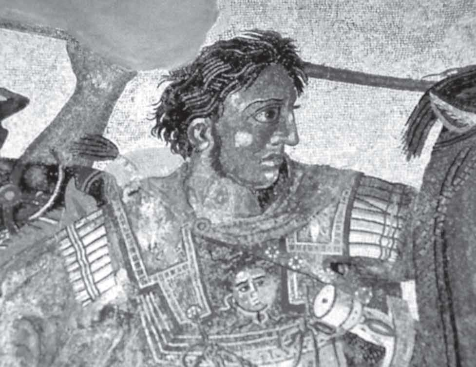
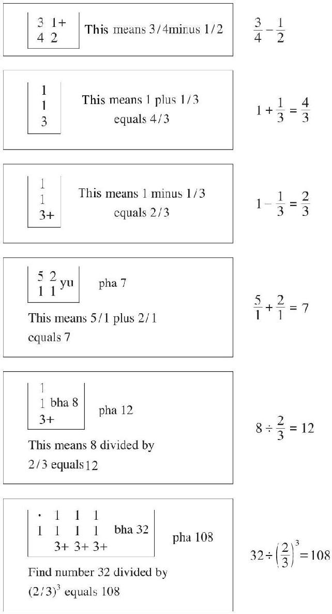

大约4000年前，正当埃及人、巴比伦人和中国人各自以不同的方式发展河谷文明的时候，有一个操印欧语系的游牧民族长途跋涉，从中亚细亚越过冈底斯山脉进入北印度并定居下来。这些人被称为雅利安人（Aryan），这个词源自梵文，本意是“高贵的”或“土地所有者”。另一部分雅利安人则西迁，成为伊朗人和一部分欧洲人的祖先。据说北欧和日耳曼诸民族是最纯粹的雅利安人，以至于有人鼓吹“高贵人种”说，这个谬论在20世纪三四十年代曾被希特勒及其追随者利用。
在雅利安人到来之前，印度已有被称为达罗毗荼人的原住民。他们的历史至少可以追溯到此前1000多年，据说是从巴基斯坦的西部越过印度河延扩而来，至今仍有1/4的印度人操属于达罗毗荼语系的语言，其中南方的泰卢固语和泰米尔语等4种语言属于印度官方语言。遗憾的是，早期达罗毗荼人所用的象形文字和中国的殷商甲骨文一样难以破解，因此，对这个时期（也可算作河谷文明）的包括数学在内的印度文明我们所知甚少。
雅利安人在印度西北部站稳脚跟以后，继续向东推进，横穿了恒河平原，抵达今天的比哈尔邦（人口逾亿，密度是日本的两倍）一带。他们征服了达罗毗荼人，使得北部地区成为印度的文化核心区，包括吠陀教（印度教前身）、耆那教、佛教以及很久以后的锡克教等均诞生在这里。雅利安人的影响逐渐扩散到整个印度，他们在抵达以后的第一个千年里，创造了书写和口语的梵文。吠陀教也是雅利安人创造的，这是印度最古老且有文字记载的宗教。可以说，古代印度的文化便是根值于吠陀教和梵语。
恒河之滨，阿拉哈巴德沐浴节
吠陀教是一种重视祭礼的多神教，尤其崇拜一些与天空和自然现象有关的男性神灵，与继而兴起的印度教很不相同。祭礼以宰牲献祭为中心内容，还要榨制和饮用苏摩（Soma）酒。苏摩是一种属性不明的植物，茎中的液汁经过羊毛过滤，和以水与奶成为苏摩酒。信徒珍视苏摩酒，因为它使人兴奋，甚至会产生幻觉。至于献祭的目的，自然是为了神灵能以大量牲畜、好运、健康长寿和男性子孙等物质利益相回报。可是，过于烦琐的仪式和清规戒律使得吠陀教日渐衰落。
吠陀教因其唯一的圣典《吠陀》而得名，后者成书于公元前15世纪至前5世纪，历时1000年左右。吠陀（Veda）的本意是“知识”“光明”，这部圣典的主体部分是用梵文写的，其中最重要也是最古老的是几个吠陀本集，既有关于诸神的颂诗，也有散文体或韵文体的祭辞。书中把印度社会分成4个等级或种姓，分别是婆罗门（祭司）、刹帝利（统治者）、吠舍（商人）和首陀罗（非雅利安族奴隶），这种划分基本上仍存在于后世的印度教中。
除了本集以外，《吠陀》还有附加文献，用以对祷颂诗和祭辞的阐释和说明，包括三部分：《梵书》《森林书》和《奥义书》。《梵书》主要讲解祭仪规则，《森林书》主要阐述祭祀理论和灵性修持的各种不同方法，《奥义书》则揭示如何摧毁个体灵魂的无明，引导灵性修持者获得最高的智慧和完美的成就，以及摆脱我们对物质世界、世俗诱惑和肉体小我的执着。以上著作均属于“天启”，而根据人们记忆“传承”的经典则首推《薄伽梵歌》，这本书的一条箴言是：宁静即瑜伽。
《奥义书》
典型的泰国印度教寺庙，外观呈等腰梯形
《吠陀》最初由祭司口头传诵，后来记录在棕榈叶或树皮上。虽然大部分已经失传，但幸运的是，残留的《吠陀》中也有论及庙宇、祭坛的设计与测量的部分——《测绳的法规》，即《绳法经》。这是印度最早的数学文献，此前只在钱币和铭文上能看到零碎的数学符号，其中有一些数学问题涉及祭坛设计中的几何图形和代数计算，包括毕达哥拉斯定理的应用，矩形对角线的性质、相似图形的性质，以及一些作图法等，拉绳测量和基本几何体的面积计算是必不可少的。
《绳法经》的成书年代大约为公元前8世纪至2世纪，不晚于印度两大古典史诗《摩诃婆罗多》和《罗摩衍那》。据说现在保存较好的《绳法经》共有4种，分别以其作者或作者所代表的学派命名。书中包含了修筑祭坛的法则，包括祭坛的形状和尺寸。最常用的三种形状是正方形、圆形和半圆形，但不管哪种形状，祭坛的面积必须相等。因此，印度人要学会（或已经学会）画出与正方形等面积的圆，或两倍于正方形面积的圆，以便建造半圆形的祭坛。另外一种形状是等腰梯形，甚至其他等面积的几何图形，这就提出了新的几何问题。
在设计这类规定形状的祭坛时，必须懂得一些基本的几何知识和结论，例如毕达哥拉斯定理。印度人陈述这个定理的方式非常独特，“矩形对角线生成的（正方形）面积等于矩形两边各自生成的（正方形）面积之和”。显而易见，这不同于《周髀算经》里源自日高测量需要的面积计算方法。这段时期的印度数学只不过是一些不连贯的用文字表达的求面积和体积的近似法则，这些法则当然都是经验的，没有任何演绎证明。
举例来说，如果要修筑两倍于某正方形面积的圆形或半圆形祭坛，需要用到圆周率，《绳法经》里记载了以下近似值：

此外，还有人用到了π=3.004和π=4（ ）2 ≈3.16049的近似值。而在设计面积为2的正方形祭坛的边长时，又需要知道

的值。《绳法经》里有这样的公式记载：
精确到小数点后5位。值得注意的是，这里的表达式和上文π的表达式全部采用了单位分数，这与埃及人的计数法完全一致，不知道是“惊人的巧合”，还是一种借鉴。
公元前599年，耆那教的创始人摩诃毗罗（又称大雄）出生在比哈尔邦，与比他小36岁的佛教始祖释迦牟尼的出生地颇为相近。两人还有许多共同点，例如，他们都是部落首领的儿子，都在优越的环境中长大，都是在30岁前后放弃财产、家庭和舒适的生活，去过流浪的生活并寻找真理。不同的是，（除了妻子以外）释迦牟尼扔下的是襁褓中的儿子，而摩诃毗罗抛弃的是年幼的女儿。耆那教和佛教几乎是同时兴起，都是为了反对吠陀教的繁文缛节和婆罗门至上的种姓制度。
耆那在梵语里的本意是胜利者或征服者，这种宗教认为没有创世之神，时间无尽无形，宇宙无边无际，万物分为灵魂与非灵魂。耆那教的兴趣和原始经典所涉及的范围非常广泛，除了阐明教义以外，还在文学、戏剧、艺术、建筑学等方面做出了重要贡献，其中也包含数学和天文学的基础原理和结论。在公元前5世纪到2世纪一些用普拉克利特语（比梵文更古老的语言，意指俗语，梵文即雅语）书写的读物中，出现了诸如圆周长C=

，弧长s=
等近似计算公式。相比之下，佛陀认为一切无常，无论是外在事物或身心，都在不断变化。因此，它不可能规定诸如祭坛的面积。佛教接纳一切人，不分种姓，不承认人与人之间有任何本质差异。比起耆那教和印度教来，佛教更像一种哲学观念，尤其在印度。佛教的时间观念也很特别，多少体现出一种数学的味道。例如，可能是因为印度一年有三个季节（雨季、夏季、旱季），佛经里把昼夜也各分成三个部分，分别是上日、中日和下日，初夜、中夜和后夜。至于年份，100年为一世，500年为一变，1000年为一化，1.2万年为一周。

侧卧的佛陀（印度阿旃陀村）

祭坛上的图案
更有意思的是时间的分割，佛学中大抵以“剎那”为最小时间单位。梵语里有“刹那”和“一念”，一念有90刹那，所谓“少壮一弹指，六十三刹那”。可是，“刹那”的真量，除佛陀外皆不能尽知。于是，就有了以下诗歌：
我们看到月亮的圆缺，知道时间运转不息；
我们体察心念的生灭，知道光阴的短暂。
在耆那教和佛教兴起的同时（公元前6世纪），灵魂再生、因果报应和通过冥思苦想来摆脱轮回的观念在吠陀教徒中广为流传，进而脱胎成为印度教。
从此以后，这个涉及几乎全部人生的新教逐步主宰了整个印度次大陆（耆那教在印度的影响范围仅限于西部和北部的少数几个邦，而佛教的影响范围主要在东南亚等地，在印度则已蜕化成一种哲学体系和道德规范），甚至成为南亚许多民族（如尼泊尔人和斯里兰卡人）的信仰、习俗和社会宗教制度。与此同时，数学也逐渐摆脱了宗教的影响，成为天文学的有力工具。
到公元前5世纪中叶，位于比哈尔邦的摩揭陀国征服了整个恒河平原，为日后的孔雀帝国（约公元前324—约前188）的繁荣昌盛打下了基础，后者在阿育王统治时期（公元前3世纪）达到鼎盛。阿育王被视为印度历史上最伟大的君主，毕生致力于佛教的宣扬和传播，他是佛陀之后使佛教成为世界性宗教的第一人，犹如基督教的使者保罗。阿育王的祖父是孔雀王朝的创立者，他在驱逐亚历山大大帝的同时或稍后，征服了印度北部，建立起印度历史上的第一个帝国。
说到亚历山大的入侵，那是一次奇迹般的征程，架起了一座连接西方的希腊和东方的印度的桥梁。在到达里海南岸后，亚历山大的军队继续向东行进，建造了阿富汗的两座名城——赫拉特和坎大哈，之后向北进入中亚的撒马尔罕。亚历山大没有占领那里，而是挥师南下，穿过兴都库什山脉的山隘，从喀布尔以东的开伯尔山口进入印度。本来，他还想继续东进，越过沙漠到达恒河地区。可是，经过多年征战，士兵们已筋疲力尽。公元前325年，亚历山大从印度河流域撤走，返回波斯。他在旁遮普设立了总督，并留下一支军队，后来被阿育王的祖父赶走。

亚历山大大帝，他的远征架起了连接东西方的桥梁
虽以失败告终，但这次远征却留下了不可磨灭的痕迹。它开启了希腊与印度的交流，据说到了罗马时代，亚历山大商人在南印度拥有许多定居区，他们甚至在那里建起奥古斯都神庙，其影响力可见一斑。定居点通常由两队罗马士兵守卫，罗马皇帝也曾派遣使臣到南印度。至于在数学和其他科学领域，希腊文明对印度人肯定也有影响。公元5世纪的一位印度天文学家这样写道：“希腊人虽不纯正（凡持不同信仰的人都被视为不纯正）但必须受到崇敬，因他们在科学方面训练有素并超过他人。”
1881年夏，在今天巴基斯坦（在当时和古代的大部分时间里都属于印度）西北部距离白沙瓦约80公里的一座叫巴克沙利的村庄，一个佃户在挖地时发现了书写在桦树皮上的所谓“巴克沙利手稿”。上面记载了公元元年前后数个世纪的数学（也称耆那教数学）知识，内容十分丰富，涉及分数、平方数、数列、比例、收支与利润计算、级数求和、代数方程，等等。其中还引进了减号，状如今天的加号，不过写在减数的右边。最有意义的是，手稿中出现了完整的十进制数字，其中零用实心的点号表示。
表示零的点号后来逐渐演变成为圆圈，即现在通用的“0”，它最晚在公元9世纪就已出现，因为在876年的一块瓜廖尔石碑上，清晰地刻着数字“0”。瓜廖尔是印度北方的一座城市，属于人口最密集的中央邦，该邦与比哈尔邦相邻，同处恒河流域。据说那块石碑是在一座花园里，上面刻着每天计划供给当地庙宇的花环或花冠数，其中的两个“0”虽然不大，但却写得非常清晰。
印度人还用正数表示财产，负数表示欠债。用“0”表示零，无疑是印度人的一大发明。“0”既表示“无”的概念，又表示位值制数字计数法中的空位。它是数的一个基本单位，可以与其他数一起计算。相比之下，早期巴比伦楔形数字和宋元以前的中国算筹计数法，都只是留出空位而没有符号。后来的巴比伦人和玛雅人虽然引进了零号（玛雅人是用一只贝壳或眼睛），但仅用它表示空位而没有把它看作一个独立的数字。
值得一提的是，瓜廖尔石碑上所刻的数字比起阿拉伯语数字来，更接近于今天全世界通用的“阿拉伯数字”。公元8世纪以后，印度数字和零号便先后传入阿拉伯世界，再通过阿拉伯传到欧洲。13世纪初，斐波那契的《算经》里已有包括零号在内的完整的印度数字的介绍。印度数字和十进制计数法被欧洲人普遍接受并改造以后，在近代科学的进步中扮演了重要的角色。从那以后，印度数学史也成了几个顶尖数学家的历史。

巴克沙利手稿上的算术题